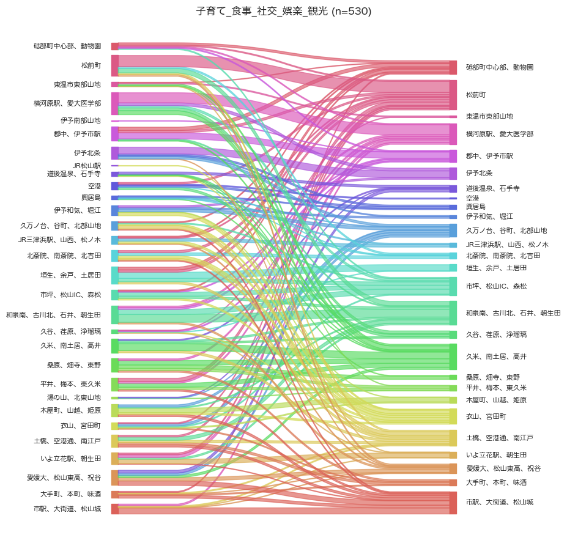
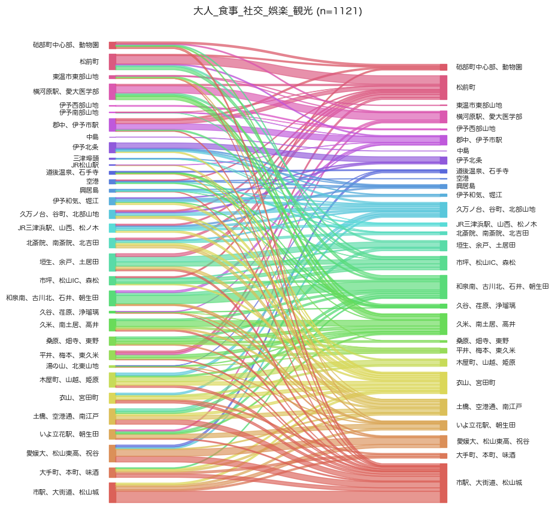

解説 4
子育て世帯の大人の食事・社交・娯楽・観光目的のトリップの出発地・目的地分布を図1に示します。 25〜59歳の人口全体と比較して、松山市1区 (市駅、大街道、松山城)のゾーンの割合が小さく、松前町、東温市1区 (横河原駅、愛大医学部)、砥部町1区 (砥部町中心部、動物園)のゾーンの割合が大きいです。 このことから、中心部には子育て世帯にとって魅力的な目的地が少なく、郊外のショッピングセンターやレジャー施設が選択されている、と考えられます。

(a) 子育て世帯の大人

(b) 25〜59歳の人口全体
図1：食事・社交・娯楽・観光目的の出発地（左列）と到着地（右列）